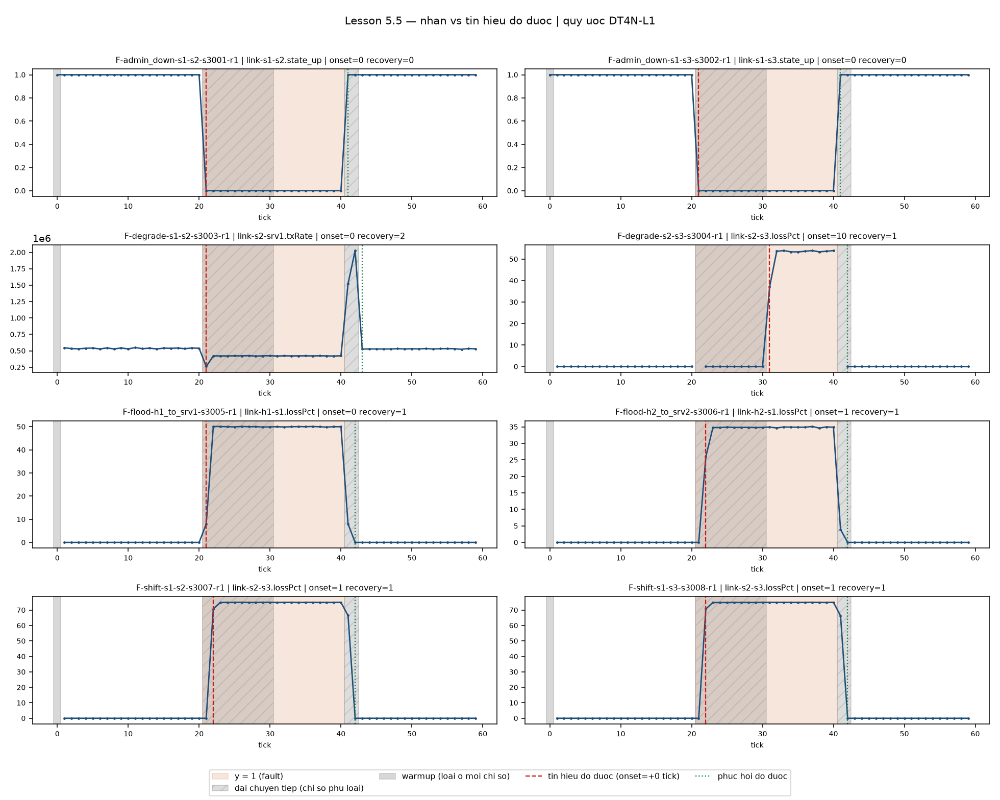

Grace onset 2 không đạt. Đã lưu bằng chứng và chốt onset10/recovery2 cho độ nhạy; nhãn y và đánh giá chính giữ nguyên. Không thu lại mạng, chưa huấn luyện mô hình.
| Run | Chứng nhân | Onset | Recovery |
|---|---|---|---|
| F-admin_down-s1-s2-s3001-r1 | link-s1-s2.state_up | 0 | 0 |
| F-admin_down-s1-s3-s3002-r1 | link-s1-s3.state_up | 0 | 0 |
| F-degrade-s1-s2-s3003-r1 | link-s2-srv1.txRate | 0 | 2 |
| F-degrade-s2-s3-s3004-r1 | link-s2-s3.lossPct | 10 | 1 |
| F-flood-h1_to_srv1-s3005-r1 | link-h1-s1.lossPct | 0 | 1 |
| F-flood-h2_to_srv2-s3006-r1 | link-h2-s1.lossPct | 1 | 1 |
| F-shift-s1-s2-s3007-r1 | link-s2-s3.lossPct | 1 | 1 |
| F-shift-s1-s3-s3008-r1 | link-s2-s3.lossPct | 1 | 1 |
